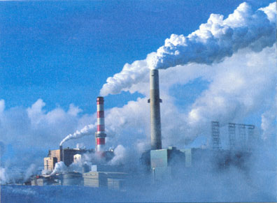

CORONAVIRUS
Impactos causados pela doenca

impactos causados pelo coronavírus de 2020 ocorreram quando a pandemia de COVID-19 atingiu Hubei, China, epicentro do surto que posteriormente afetou Europa, América, África e Oceania, com 179 territórios com casos confirmados.[1]
Dentre os impactos, estão queda da bolsa de Valores nas principais regiões afetadas,[2] queda de consumo, quarentena,[3] entre outros.
impacto 1 :Economico
Como a China continental é uma grande economia e um centro de manufatura, o surto viral foi visto como uma grande ameaça desestabilizadora para a economia global. Agathe Demarais, da Economist Intelligence Unit, previu que os mercados permanecerão voláteis até que se tenha uma definição dos possíveis resultados. Alguns analistas estimaram que as consequências econômicas da epidemia no crescimento global poderiam superar as do surto de SARS.[7]
da
Montadoras globais anunciaram que vão parar a produção de veículos. No Brasil, os estoques de peças e equipamentos eletrônicos vindos da China tem previsão de durar até final de fevereiro. Apesar de ainda não faltar produto no comércio, se o abastecimento não for normalizado, os preços podem subir. Levantamento da Associação Brasileira da Indústria Elétrica e Eletrônica (Abinee) apurou que 52 por cento das indústrias pesquisadas apresentam problemas no recebimento de materiais, componentes e insumos vindos China, principalmente entre as fabricantes de produtos de Tecnologia da Informação.[8]
impacto 2 :Consumo
impacto 3: Turístico
O Sudeste Asiático é um dos lugares mais afetados em relação ao turismo. O balneário de Pattaya, um dos destinos favoritos dos chineses na Tailândia, geralmente repleto de visitantes, ficou vazio durante o surto. Nos famosos templos de Angkor, no Camboja, a venda de ingressos caiu cerca de trinta por cento, segundo dados do Ministério do Turismo. A mesma situação vive o Vietnã, onde 13 mil reservas de hotel foram canceladas em Hanói. Além disso, as visitas à Baía de Ha Long despencaram mais de 60 por cento.[19] Desde o fim de janeiro, a China colocou em quarentena cerca de 56 milhões de habitantes e proibiu a toda a população viagens organizadas para o exterior.[19]
impacto 4: Esporte
O campeonato mundial de tênis de mesa que iria ocorrer em março na Coreia do Sul foi cancelado por temor ao novo coronavírus.[36]
No dia 15 de março de 2020, a Confederação Brasileira de Futebol (CBF) suspendeu todos os torneios nacionais de futebol por tempo indeterminado, com a medida começando a valer já na segunda-feira, 16 de março.[37]
No dia 24 de março de 2020, é confirmado o adiamento das Olimpíadas de Tóquio para 2021, se tornando a primeira edição na história dos Jogos Olímpicos a ocorrer num ano ímpar e também a quarta a ser cancelada na era moderna. A ideia foi apresentada pelo primeiro ministro japonês, Shinzo Abe e foi acatada pelo presidente do COI, Thomas Bach em uma videoconferência.[38]
impacto 5: Ambiental
 O surto de COVID-19 tem levado a uma menor demanda por produtos energéticos e matérias-primas, tais como: petróleo, combustível de aviação, gás natural liquefeito, minério de ferro, cobre.[39]
A diminuição da demanda de matéria-prima e produtos refinados associada à diminuição da atividade industrial levou à redução da poluição emitida na China.[40]
A poluição na China diminui 25 por cento devido ao surto de COVID-19.[41]